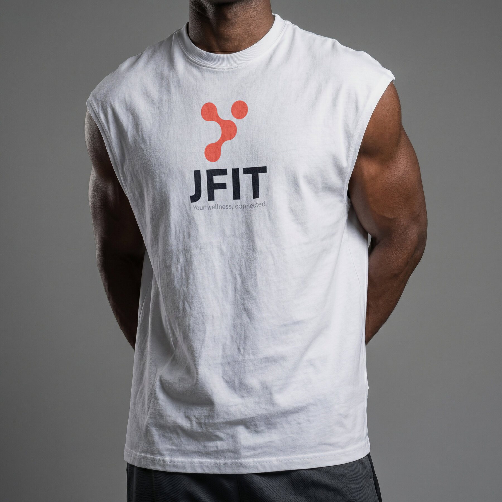
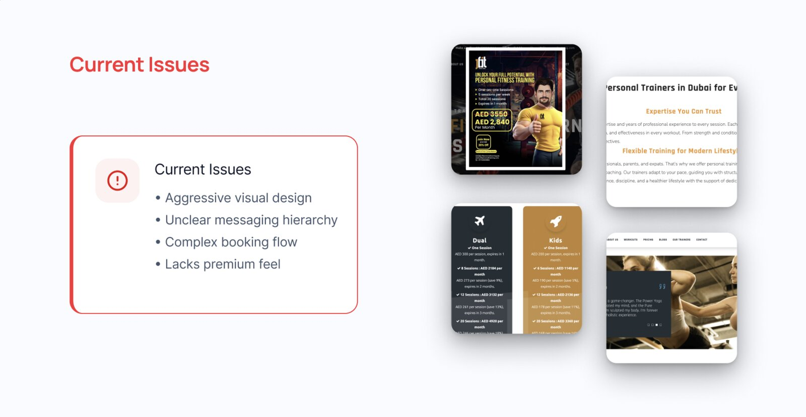
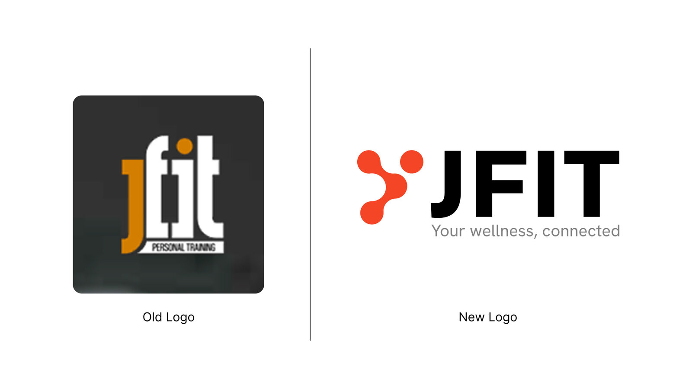
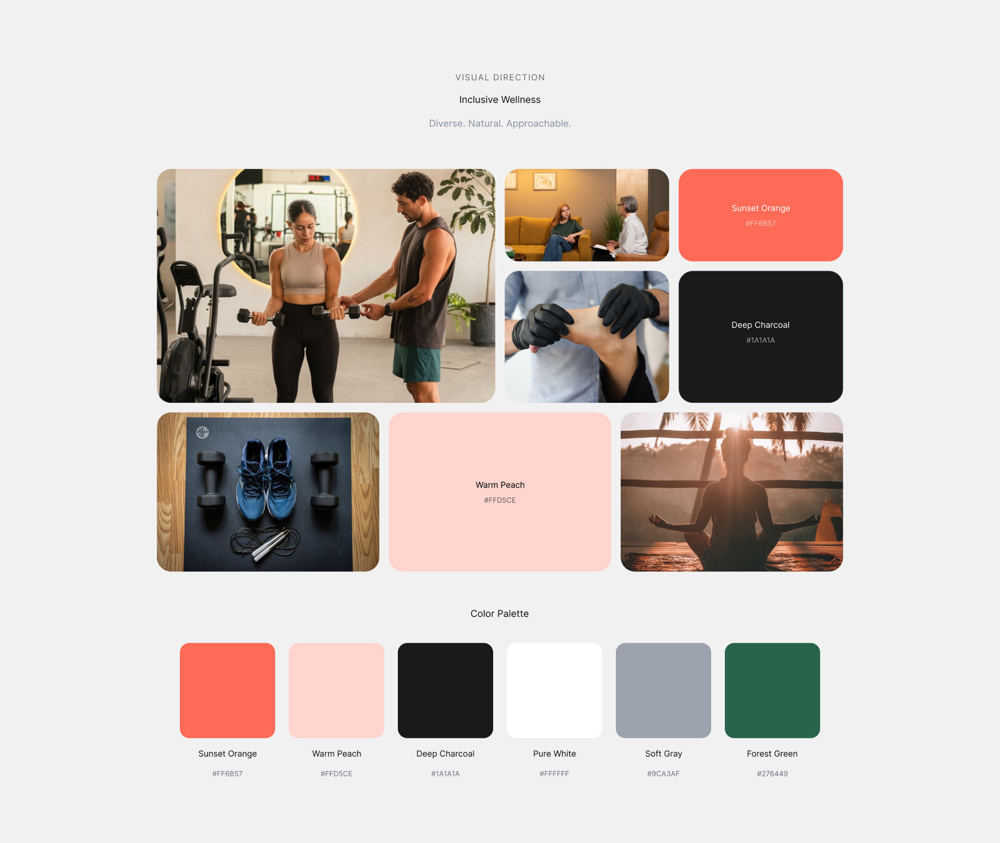
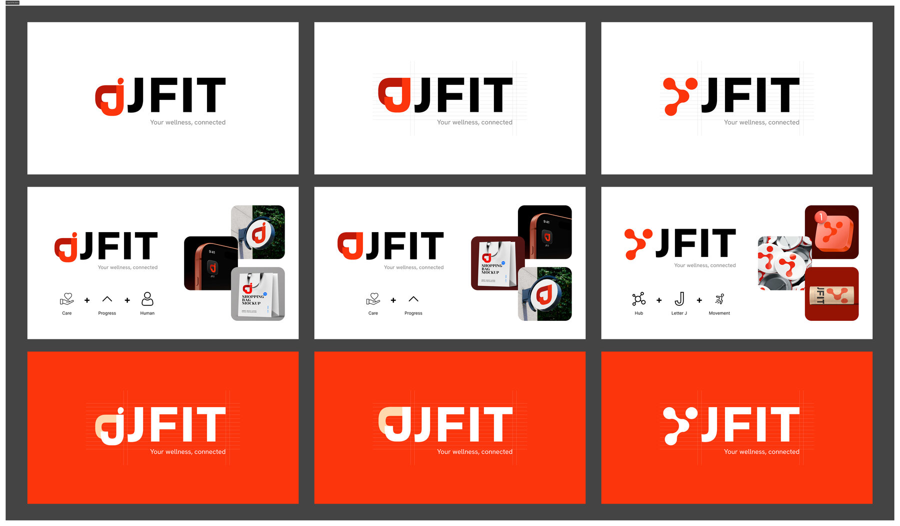
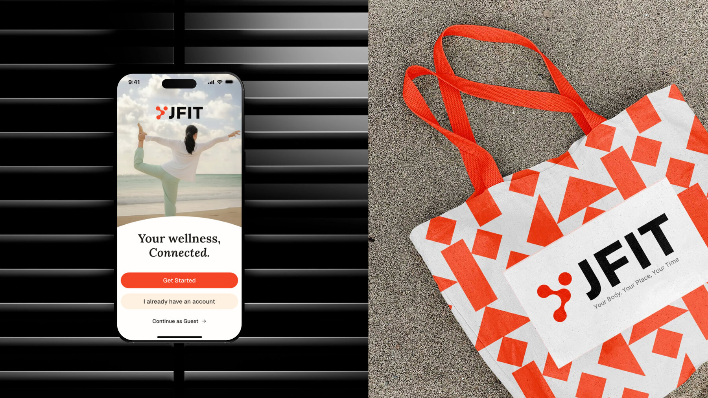

JFIT transitioned from a traditional gym identity into a comprehensive wellness ecosystem, unifying physical fitness, mental well-being, and personal coaching into a seamless, modern experience.

JFIT needed to shed the traditional, high-intensity gym aesthetic to support its vision of a holistic wellness ecosystem. The core challenge was designing an adaptable visual system capable of bridging physical spaces, digital platforms, mental health coaching, and lifestyle merchandise under one cohesive brand voice.

To pivot from a high-energy gym identity to an all-encompassing wellness brand, we restructured the visual identity from the ground up.
| Legacy Brand Identity | New Ecosystem Visual System |
|---|---|
| Traditional Gym AestheticFocused heavily on aggressive fitness cues and high-intensity workout visuals. | Holistic Wellness EcosystemSoft, modern, and approachably sophisticated, representing physical, mental, and coaching pillars. |
| Fragmented AssetsInconsistent logo application across digital platforms and physical apparel. | Structured ArchitectureFlexible, responsive logo system with rigid clear-space grids and scalable lockups. |
| Standard PaletteHigh-contrast gym colors with limited emotional resonance. | Refined Color PaletteDeep Charcoal, Bright Vermilion, and Off-White driving trust and elevated energy. |

The new identity centers around an interconnected emblem symbolizing holistic care. Paired with a dual-type system, Space Grotesk for modern, structural headings and Lora for approachable, editorial prose, the identity easily flexes between tech interfaces and reflective mental wellness touchpoints.


Enter the PIN shared with you to view the Implementation section.
From mobile app components to physical apparel and merchandise, the rebranded identity presents a clean, premium visual presence. Standardized usage rules, color variations, and logo “don'ts” ensure visual integrity across every customer interaction point.
